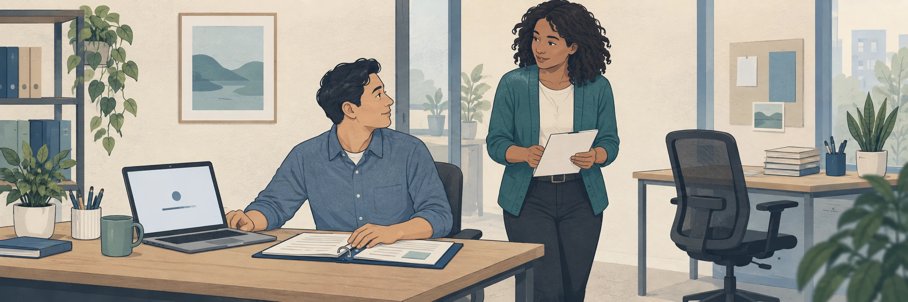

Look for something somebody asked you to do, an “I need to” or “we should” statement, or a row you marked as stuck. Bring your cumulative table and work without AI.
A surface request names a solution before the underlying problem is clear. “We need an app to track onboarding” tells you what someone wants built; it does not yet tell you what needs to change.

Getting started depends on people and handoffs. Illustration created with AI for this course.
Ask “Why?” and “Why does that matter?” until you reach a goal people involved could agree is worthwhile. Keep going if the answer still says what to build.
Illustrative worked example · Onboarding
Request
“We need an app to track onboarding.”
Ask why it matters
Why? So managers can see who is stuck. Why does that matter? New hires wait days for help, and nobody notices.
Goal
New hires should contribute to their teams as quickly as possible.
Now list two or three possible obstacles to the goal. In this example, you might examine:
These are possibilities to investigate. An app might help with one and leave another untouched.
Include requests you give yourself. “I need to fix my resume” might lead to a goal of finding a role that uses your strengths and pays appropriately. The obstacle could be your resume, the roles you target, or how you reach employers. Examine your actual situation to distinguish them.
For each request, keep the why-chain and obstacle list in your working notes. Add the possibilities you can observe to your table, keeping your earlier rows:
The table is the deliverable; your working notes need not be submitted. If the original request remains the only obstacle after examining alternatives, keep its row and note that result. If you find no requests or no new rows, say so.
Keep your table for Test and commit. First, complete the Concept check.
Drafts save in this browser. Keep your own copy.
Optional practice · 0 points. Submit to mark it complete, or continue without submitting.
Paste into Canvas to submit. Copying or saving here does not submit your work. Open the Canvas assignment
Clear this saved draft? Keep a copy first.